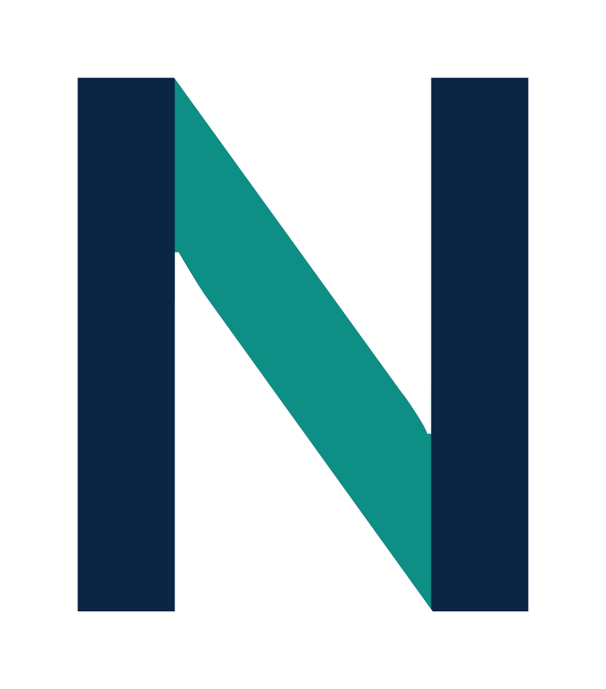
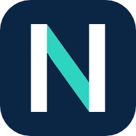

Primary lockup · light ground
Rasterised from vector at production width
520 px
260 px
130 px · minimum lockup
Primary lockup · dark ground
Paper + bright teal on ink

420 px

horizontal · 260 px

crest · 150 px
Mark at interface sizes
Actual pixels — no scaling

96
48
32
24
16
mono 32
At 16 px the teal diagonal still separates from the navy stems. Below 16 px use the favicon, which is drawn with a heavier N.
Icon system
App icon and favicon at real sizes

app 192
app 64
fav 64
fav 32
fav 16
favicon 16 · shown at 8×
favicon 32 · shown at 4×
app 64 · shown at 2×
Mono reproduction
Single colour, tint, and the one-colour mark
mono
mono · tint
mark